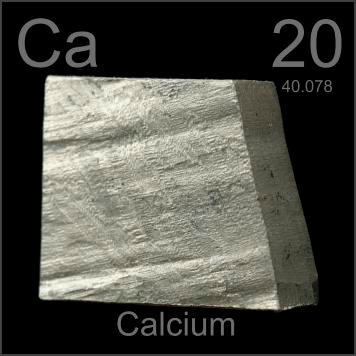

What are "alkaline earth metals"?
Alkaline earth metals are found in group 2 of the periodic table. They were once known as group IIA. Because the outer electron structure in all of these elements is similar, they all have similar chemical and physical properties.
Characters of alkaline earth metals
- Two electron in their outer shell.
- Most are white or silver colored,shiny.
- Softer and stronger than most other metals (except the alkali metals).
- Low density.
- High boiling points.
- High melting points.
- Good conductors of heat and electricity.
- Ductile.
- Reactive metals(react easily with halogens).
- Low electronegativity.
- Low ionization energy(much larger than alkali metals).
- Second largest atomic radius in their periods.
- Not found freely in nature,but the compounds made from the elements of group 2 are usually found in the Earth.
Trends among alkaline earth metals
- Atomic numbers become larger and larger as the column goes down.
- The amounts of electron shells become more and more as the column goes down.
- Atomic radiues become larger and larger as the column goes down.
- Electronegativity becomes lower and lower as the column goes down.
- More and more reactive as the column goes down.
- Ionization energy becomes lower and lower as the column goes down.
- Melting points and boiling points are atactic.
- Densities are atactic.
Members of alkaline earth metals
Be(Beryllium)

Mg(Magnesium)

Ca(Calcium)

Sr(Strontium)
Ba(Barium)
(Radium)